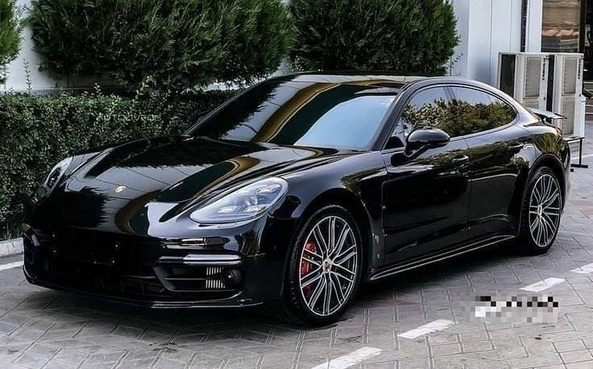
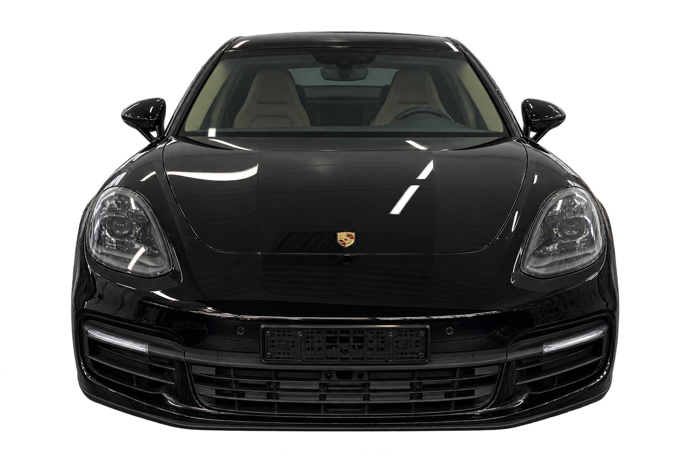
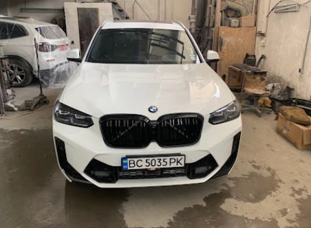
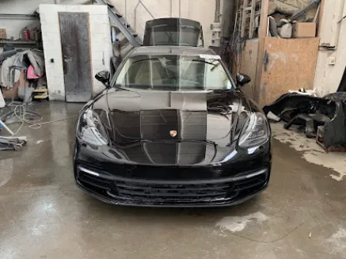
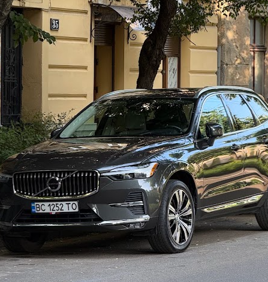
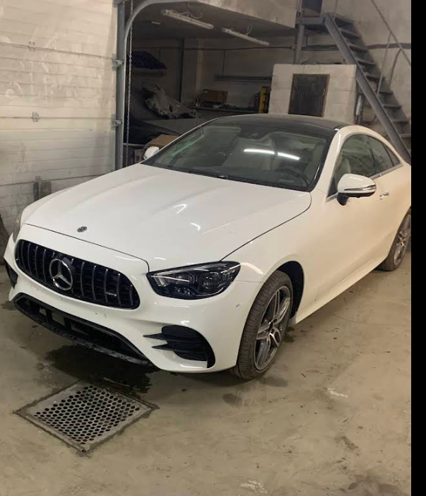
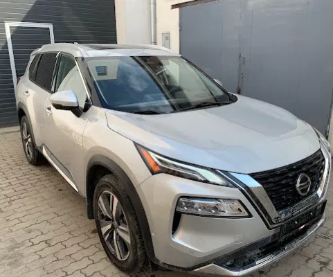
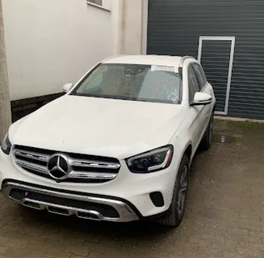

Обладнання майстерні
[ПОТРІБНО УТОЧНИТИ У ЗАМОВНИК: чи є стапель і фарбувальна камера, яке обладнання використовують для підбору кольору.]
Рихтуємо, фарбуємо та замінюємо пошкоджені деталі. Обсяг ремонту й вартість визначаємо після огляду.
Дивитися роботи
Після огляду визначаємо, які деталі можна відремонтувати, а які потрібно замінити. Обговорюємо обсяг робіт і вартість для вашого авто.
Рихтування, ремонт та заміна пошкоджених елементів кузова.
Локальне та повне фарбування. Підготовка поверхні й підбір відтінку.
Ремонт і заміна пошкоджених деталей після аварії. У галереї є фото передньої частини BMW до та після складання.

[ПОТРІБНО УТОЧНИТИ У ЗАМОВНИК: чи є стапель і фарбувальна камера, яке обладнання використовують для підбору кольору.]
[ПОТРІБНО УТОЧНИТИ У ЗАМОВНИК: чи надається гарантія, на які роботи, на який строк і з якими винятками.]
На фото BMW можна порівняти передню частину до та після складання. [ПОТРІБНО УТОЧНИТИ У ЗАМОВНИК: які роботи Prime Line виконала на кожному авто в галереї.]

ПісляПередня частина до та після складання. Порівняйте стан автомобіля на двох фотографіях.
Кузов / Передня частина




За цим фільтром немає автомобілів.
Вартість залежить від пошкоджень, моделі авто та матеріалів. [ПОТРІБНО УТОЧНИТИ У ЗАМОВНИК: актуальні ціни Prime Line та що входить у вартість кожної роботи.]
Наведені діапазони не визначають максимальну вартість ремонту. Складні пошкодження та додаткові роботи можуть збільшити суму.
Оберіть потрібні роботи, щоб розрахувати орієнтовну суму. Остаточна вартість залежить від стану автомобіля.
Зателефонуйте, назвіть модель і коротко опишіть пошкодження.
Уточніть місце зустрічі, час і можливість доставити автомобіль.
Перед початком ремонту узгодьте перелік робіт, ціну й термін. [ПОТРІБНО УТОЧНИТИ У ЗАМОВНИК: як фіксують кошторис і погоджують додаткові роботи.]
Перевірте виконані роботи разом із майстром під час отримання авто.
Точну вартість визначають після огляду: за описом не видно прихованих пошкоджень. Ціни та калькулятор на цій сторінці дають лише орієнтир вартості. [ПОТРІБНО УТОЧНИТИ У ЗАМОВНИК: чи роблять попередню оцінку за фото та куди їх надсилати.]
Строк залежить від обсягу пошкоджень і наявності деталей. [ПОТРІБНО УТОЧНИТИ У ЗАМОВНИК: типові строки ремонту й фарбування однієї деталі, відновлення після ДТП та поточний час очікування запису.]
[ПОТРІБНО УТОЧНИТИ У ЗАМОВНИК: чи є гарантія на кузовні роботи та фарбування, строк дії, що вона покриває, винятки й порядок звернення.]
Зателефонуйте за номером +38 067 335 95 60. Приймаємо за попереднім записом у Львові. [ПОТРІБНО УТОЧНИТИ У ЗАМОВНИК: вулицю, номер будинку, графік роботи та орієнтир для в’їзду.]
Зателефонуйте, назвіть модель авто
та опишіть пошкодження.
{kind=link}
{kind=link}
{kind=link}
{kind=link}
{kind=link}